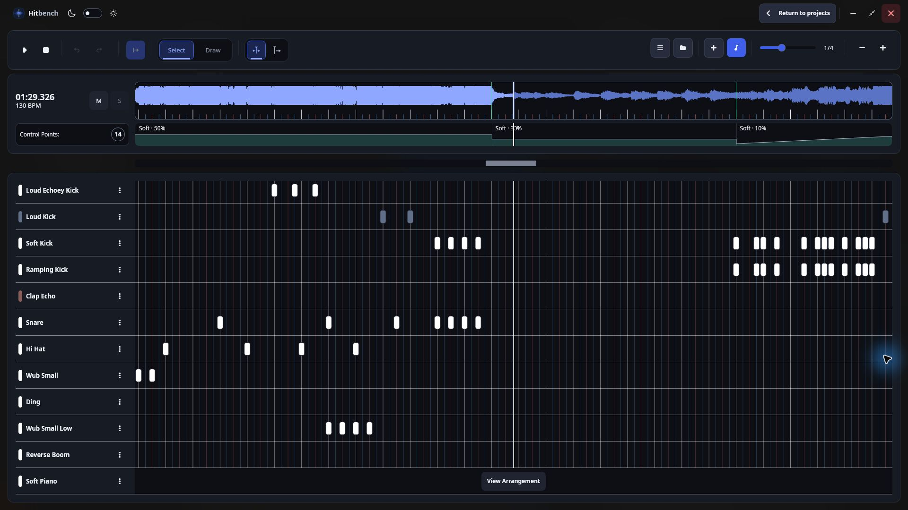
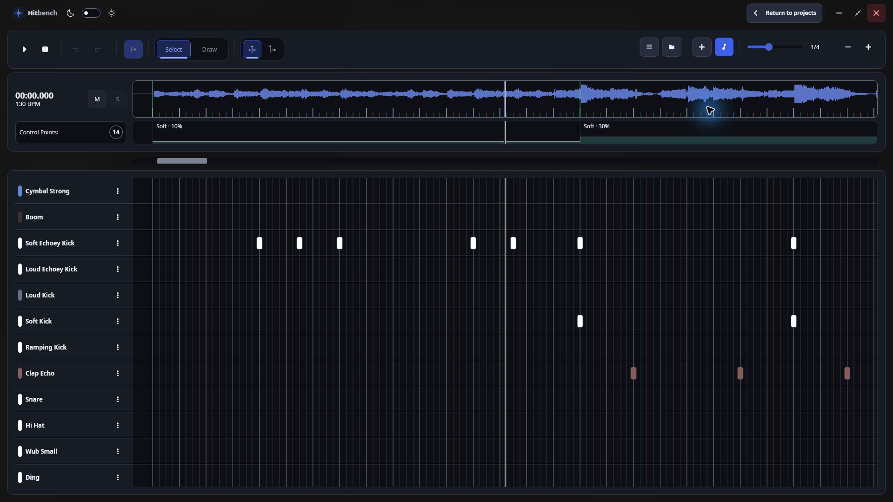
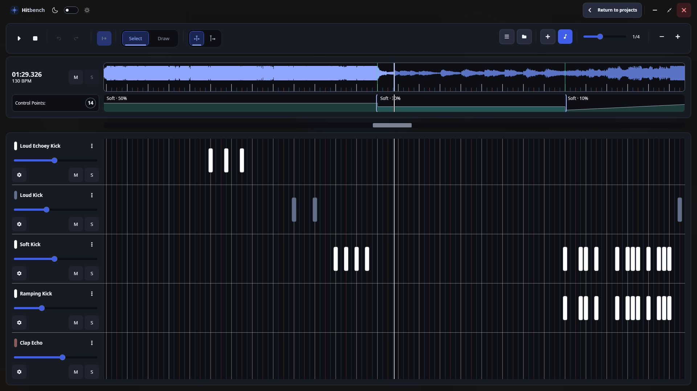
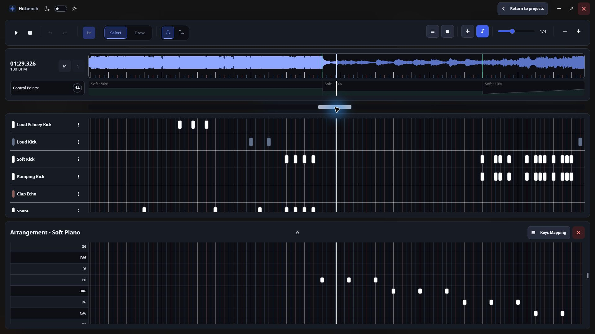
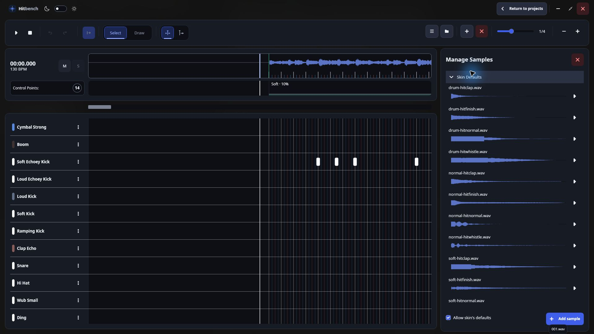
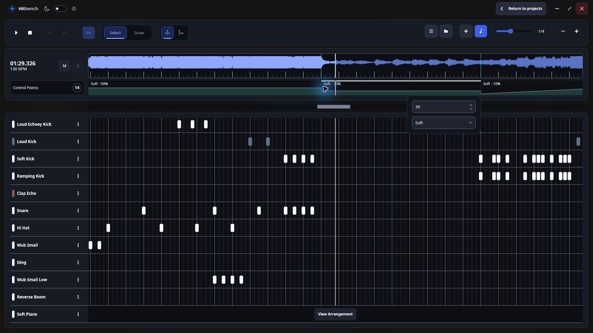
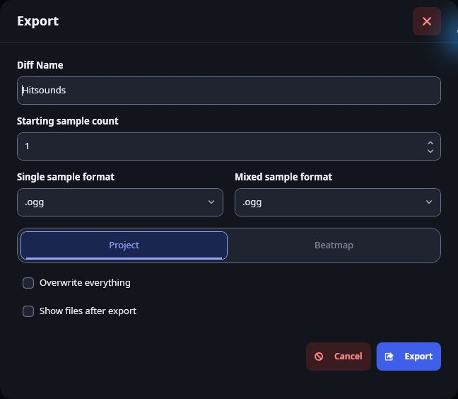

01 / Timeline
Right on the beat.
Place samples against the song waveform. Snap to the beat, zoom into the details, and hear your arrangement as you work.
Everything you need for hitsounding in one tool
By an osu! mapper, for osu! mappers

Your workflow, in focus
Scroll or swipe to explore all six features.

01 / Timeline
Place samples against the song waveform. Snap to the beat, zoom into the details, and hear your arrangement as you work.

02 / Tracks
Give each sound its own track. Rename, recolor, reorder, and audition parts with volume, mute, and solo controls.

03 / Instruments
Write instrumental parts in a dedicated piano roll. Map samples to musical keys and preview notes alongside your hitsounds.

04 / Samples
Browse and preview project and skin samples. Import WAV, OGG, and MP3 files, or drag audio straight into your workstation.

05 / Control points
Change volume and sample sets along the timeline. Add volume ramps for gradual transitions and preview their effect on sample tails.

06 / Export
Export a hitsound difficulty with its generated samples. Choose audio formats and save to your project or source mapset folder.
Less setup. More hitsounding.
Download the ZIP, extract it into a writable folder, and launch Hitbench.exe. The .NET runtime is included.
Locate your osu! installation or mapsets folder. Select a mapset and create a new project.
Add samples or instrumental tracks, arrange your sounds, and export. Your project saves automatically as you work.
From one mapper to another
Your next hitsounding project is waiting.
Download v0.0.4-beta